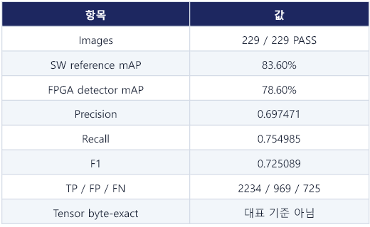
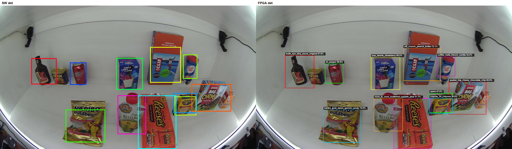
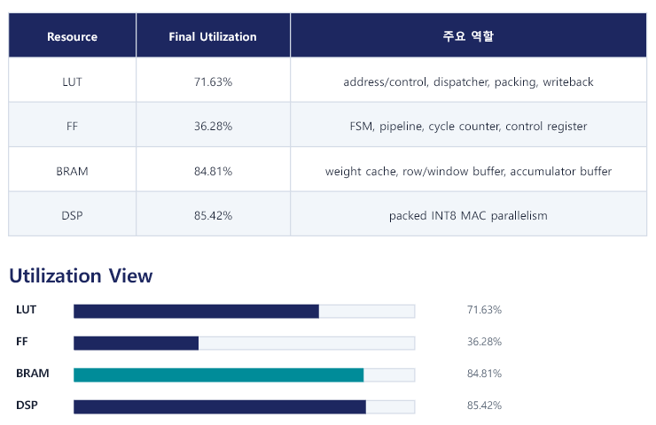
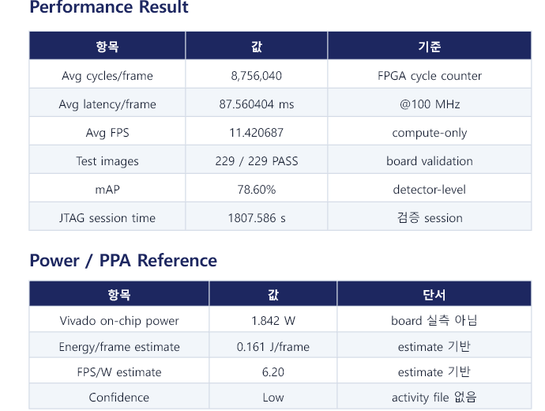

3. 229장 FPGA 검증 및 결과
FPGA의 done 신호는 계산 순서가 끝났다는 사실만 알려준다.
올바른 주소에서 데이터를 읽었는지, signed INT8을 같은 방식으로 해석했는지,
두 detection head가 실제 경계 상자와 클래스를 보존했는지는 별도로 확인해야
한다. 먼저 test_one으로 한 이미지의 program·preload·compute·
readback·후처리를 반복 점검했고, 이후 같은 bitstream과 weight를 유지한 채
229장을 연속 실행했다. 최종 정확도는 CONV14와 CONV20을 같은 decode·NMS에
넣어 계산한 detector mAP이다. 이 글에서는 실행 완료율, 검출 정확도,
compute-only 속도, timing, 자원, 추정 전력을 서로 다른 측정 경계로 나누어
설명한다.
검증의 기준
각 이미지마다 start/done, cycle 수, CONV14·CONV20 readback과 후처리 결과를 기록한다. 대표 성능에는 최종 229장 실행의 평균값만 사용하며, CONV14 branch가 빠졌던 중간 속도 실험은 포함하지 않는다. 229/229 PASS는 모든 이미지에서 FPGA 실행과 두 head readback, 결과 파일 생성이 완료됐다는 의미이다. Software와 모든 tensor byte가 완전히 같다는 의미는 아니며, 정확도는 별도의 detector mAP로 판단한다.
- 데이터
- 229장 · close/long · 2,959 truth boxes
- 입력
- 1920×1080 원본 → 256×256 RGB
- 평가
- 60 classes · IoU 0.50 · 11-point AP
- 출력
- CONV14 8×8 + CONV20 16×16
검증 수준과 확인 질문
Full-graph 가속기는 한 번에 여러 종류의 문제가 겹친다. 주소가 틀리면 올바른 계산값을 다른 위치에 저장할 수 있고, signedness가 틀리면 같은 byte를 전혀 다른 수로 해석할 수 있다. Tensor가 대체로 비슷해도 detection head의 confidence 순서가 바뀌면 최종 NMS 결과가 달라질 수 있다. 따라서 검증을 작은 단위에서 전체 데이터셋까지 단계적으로 확장했다.
| 수준 | 확인 질문 | 통과 근거 |
|---|---|---|
| 정수 reference | 양자화된 연산 규칙 자체가 검출 성능을 유지하는가 | INT8 software detector mAP 83.60% |
| Layer 비교 | 하드웨어와 software의 첫 차이가 어느 단계에서 생기는가 | 중간 tensor, 주소, packing, signedness 비교 |
| test_one | 한 이미지가 전체 그래프와 두 head를 끝까지 통과하는가 | done, cycle, CONV14·CONV20 readback |
| test_all | 상태를 초기화하며 229장을 반복 실행할 수 있는가 | 229/229 run 및 readback 완료 |
| Detector | 출력 차이가 실제 box와 class 정확도에 미치는 영향은 무엇인가 | 동일 decode·NMS 조건의 mAP, precision, recall |
검증 흐름
test_one
bitstream program, DDR input/weight preload, start와 done, CONV14·CONV20 readback, 후처리까지를 한 실행 경로에서 점검한다. 전체 데이터셋을 실행하기 전에 잘못된 주소와 실행 순서를 짧은 반복으로 찾는 단계이다.
test_all
program과 weight preload는 한 번만 수행하고 입력 이미지만 바꿔 229장을 처리하며 반복 실행 상태를 확인한다. 각 이미지 사이의 상태 초기화, done polling, 두 head의 저장과 파일 기록까지 포함한다.
Reference와 보드 결과의 비교 순서도 중요하다. 먼저 layer의 byte 수와 DDR 주소가 맞는지 확인하고, 그다음 byte packing과 signed·unsigned 해석을 맞춘다. 이후 bias, activation, requantization을 layer 단위로 비교하고, 마지막에 detector 결과를 확인한다. 최종 상자만 보고 원인을 추측하는 것보다 첫 mismatch가 나타나는 layer를 찾는 편이 문제 범위를 빠르게 줄인다.
검증 중 문제를 좁힌 순서
Full graph의 출력이 다를 때 최종 검출 이미지만 보면 원인을 찾기 어렵다. 같은 증상도 DDR 주소, byte packing, signedness, requantization, detection head scale에서 발생할 수 있기 때문이다. 검증 스크립트는 각 layer의 출력 크기와 주소를 확인하고, 필요할 때 packed 32-bit word를 dump해 software reference와 처음 달라지는 지점을 찾도록 구성했다.
| 관찰된 증상 | 먼저 확인한 지점 | 수정·판단 기준 |
|---|---|---|
| 전체 출력이 무작위처럼 보임 | IFM/WGT/OFM base address와 word 수 | Descriptor와 host memory map을 동일하게 맞춤 |
| 채널마다 값이 뒤섞임 | HWC/CHW 순서와 32-bit byte packing | 한 pixel의 channel 4개를 같은 byte 순서로 해석 |
| Backbone은 유사하지만 head가 크게 다름 | ReLU bypass, signed clamp, head scale | CONV14·CONV20을 signed INT8 도메인으로 분리 |
| 두 번째 head가 잘못된 feature를 사용 | Route의 두 번째 IFM 주소와 concat 순서 | Skip feature 보존 주소와 channel stride 확인 |
| 한 장은 되지만 반복 실행이 흔들림 | Start/done, 상태 초기화, 출력 overwrite | 229장 단일 세션에서 매 이미지 결과를 기록 |
중간 구현에서는 빠른 연산 경로와 tensor 비교를 먼저 안정화했지만, 최종 detector는 8×8 CONV14 branch와 16×16 CONV20을 함께 사용한다. Branch를 복구하면 cycle과 buffer 비용이 늘어난다. 최종본은 최고 FPS 상한보다 두 head를 모두 읽어 실제 mAP를 계산할 수 있는 구조를 기준으로 고정했다. 이 선택 때문에 대표 수치는 반드시 최종 11.420687 FPS와 78.60% mAP를 함께 사용한다.
평가 조건
| 항목 | 최종 조건 |
|---|---|
| 평가 이미지 | 229장 · CAPP testset close/long |
| 원본 / FPGA 입력 | 1920×1080 → 256×256 RGB |
| Class / 정답 | 60 classes · 2,959 truth boxes |
| Detection heads | 8×8×195 CONV14 + 16×16×195 CONV20 |
| 후보 생성 threshold | 0.005 |
| Class-wise NMS | IoU 0.45 |
| mAP matching | IoU 0.50 · 11-point AP |
| Precision/Recall 표시 | Score 0.24 |
두 head의 raw tensor를 byte 단위로 완전히 같게 만드는 것만을 성공 조건으로 사용하지 않는다. 같은 decode와 NMS를 거친 최종 box·class 결과를 detector mAP로 평가한다.
평가 지표의 의미
IoU는 예측 상자와 정답 상자가 얼마나 겹치는지를 나타낸다. 이 평가에서는 IoU 0.50 이상이며 클래스가 맞는 예측을 정답과 대응시킨다. Precision은 검출했다고 표시한 결과 가운데 실제 정답의 비율이고, Recall은 전체 정답 가운데 찾아낸 비율이다. 둘 중 하나만 높이면 검출기를 과도하게 보수적으로 또는 공격적으로 만들 수 있으므로 F1은 두 값을 함께 요약한다. mAP는 confidence threshold를 변화시키며 얻은 precision–recall 관계를 클래스별로 계산한 뒤 평균한 값이며, 여기서는 11-point AP 방식을 사용한다.
후보 생성 threshold 0.005는 decode 초기에 낮은 점수의 후보도 넓게 남기는 조건이고, class-wise NMS의 IoU 0.45는 같은 클래스에서 많이 겹치는 상자를 정리하는 기준이다. 표의 precision과 recall은 score 0.24 지점에서 표시된 값이다. 따라서 이 수치들을 다른 threshold나 AP 계산법을 쓴 결과와 직접 비교할 때는 평가 조건도 함께 확인해야 한다.
PASCAL VOC 2007 detector 평가는 precision–recall curve와 AP를 사용하며, 정답 box와의 overlap으로 true positive를 판정한다. 이 프로젝트의 11-point AP, IoU 0.50, class-wise 평가 조건도 결과와 함께 고정해 재현 가능성을 남겼다. VOC2007 Development Kit 평가 설명
Detector 평가 결과
| 지표 | FPGA detector 결과 |
|---|---|
| mAP | 0.786049 · 78.60% |
| Precision | 0.697471 |
| Recall | 0.754985 |
| F1 | 0.725089 |
| TP / FP / FN | 2,234 / 969 / 725 |
FPGA 결과는 2,959개의 정답 상자에 대해 true positive 2,234개, false positive 969개, false negative 725개를 기록했다. Precision 0.697471은 출력한 검출 가운데 약 69.7%가 평가 조건에서 정답으로 대응되었다는 뜻이고, Recall 0.754985는 정답의 약 75.5%를 찾았다는 뜻이다. 이 두 값을 결합한 F1은 0.725089이다. mAP 0.786049는 각 클래스의 전체 precision–recall 곡선을 요약하므로 한 score 지점의 precision이나 F1과 값이 같을 필요가 없다.


시각 비교 이미지는 두 경로가 같은 물체를 대체로 찾는지, 한쪽에서 상자가 사라지거나 중복되는지를 빠르게 확인하는 정성 자료이다. 보기 좋은 사례 한 장만으로 전체 정확도를 대표하지 않기 때문에 대표 성과에는 229장 mAP만 사용한다. Software 정수 기준 83.60%와 FPGA 78.60% 사이의 약 5.00%p 차이는 남아 있으며, 양자화·packing·signedness·head scale·후처리 경계를 분리해 추적해야 한다.
측정 범위와 처리 속도
100MHz cycle counter에서 한 이미지의 평균은 8,756,040 cycles, 87.560404ms이다. 이를 역수로 계산한 값이 11.420687 FPS이다. JTAG 입력 전송, Python 전처리와 detector 후처리는 이 수치에 포함하지 않는다. Cycle counter는 start 이후 full graph가 두 head를 만들고 완료될 때까지의 FPGA 내부 계산 구간을 센다.
| 측정 구간 | 확인값 | 포함 범위 |
|---|---|---|
| FPGA cycle counter | 87.560404ms · 11.420687 FPS | 가속기 compute-only |
| 229장 JTAG session | 1,807.586s | Program, preload, readback, 평가와 고정 overhead |
JTAG은 검증 인터페이스이므로 전체 세션 시간을 실시간 카메라 처리량으로 해석하지 않는다. compute-only FPS에는 데이터 전송과 후처리가 포함되지 않는다.
229장 JTAG 세션의 1,807.586초에는 프로그램, weight와 입력 전송, readback, Python 평가, 고정 대기 시간이 포함된다. 이는 자동화된 보드 검증 한 회차의 소요 시간이며 제품형 입출력 구조의 end-to-end latency가 아니다. 실제 카메라 시스템의 처리율을 평가하려면 DMA 또는 스트리밍 입력, host 후처리, 프레임 간 pipeline까지 포함해 다시 측정해야 한다.
Timing·자원·전력
| 항목 | 최종 값 | 해석 |
|---|---|---|
| Clock / WNS | 100MHz / +0.111ns | Setup timing 만족 |
| WHS | +0.017ns | Hold timing 만족 |
| LUT | 45,414 / 63,400 · 71.63% | 제어, 주소, packing과 reduction 포함 |
| FF | 46,000 / 126,800 · 36.28% | Pipeline과 상태 레지스터 |
| BRAM | 114.5 / 135 · 84.81% | Weight cache와 feature buffer |
| DSP | 205 / 240 · 85.42% | Packed INT8 MAC과 requantization |
| Power | 1.842W | Vivado routed estimate · confidence Low |


최종 critical path는 MAC 산술 자체가 아니라 weight cache write-side register에서 BRAM 입력으로 이어지는 route에 있었다. 연산기만 파이프라인화해도 timing 문제가 끝나지 않고, cache 배치와 routing까지 함께 고려해야 하는 구조적 조건이다.
LUT는 제어와 주소 계산, packing, reduction에 쓰이고 FF는 pipeline과 상태 저장에 쓰인다. BRAM은 weight cache와 feature buffer, DSP는 packed INT8 MAC과 requantization에 집중된다. BRAM 84.81%와 DSP 85.42%가 자원 여유를 제한하므로 병렬도를 추가할 때는 계산 증가뿐 아니라 buffer와 배선 증가를 함께 고려해야 한다. 전력 1.842W는 배치·배선된 설계의 Vivado 추정값이며 confidence가 Low이다. 실제 switching activity 파일이나 보드 계측을 사용한 값이 아니므로 실측 전력 또는 확정적인 효율 지표로 해석하지 않는다.
Mismatch 추적 항목
Packing과 signedness 확인
HWC byte 순서, signed·unsigned activation, head output 범위를 software reference와 비교한다.
Descriptor와 DDR offset 확인
Route의 두 번째 입력과 CONV14·CONV20 저장 주소를 layer dump로 추적한다.
Requantization 경계 확인
Bias, ReLU bypass, multiplier, shift, clamp 순서를 layer별로 비교한다.
Tensor 차이를 detector 결과로 연결
Mismatch 비율과 두 head detector mAP를 함께 비교한다.
이러한 추적 항목은 순서대로 연결된다. 예를 들어 Route 이후 처음 차이가 보이면 이전 feature의 보존 주소와 channel concatenation을 먼저 확인한다. Detection head에서만 차이가 커지면 ReLU bypass와 signed clamp, head별 scale을 확인한다. Tensor 차이는 작지만 최종 mAP가 크게 움직이면 decode의 confidence와 NMS 경계를 확인한다. 문제를 layer, 데이터 형식, 후처리의 세 경계로 나누면 full graph 전체를 한꺼번에 다시 보는 일을 줄일 수 있다.